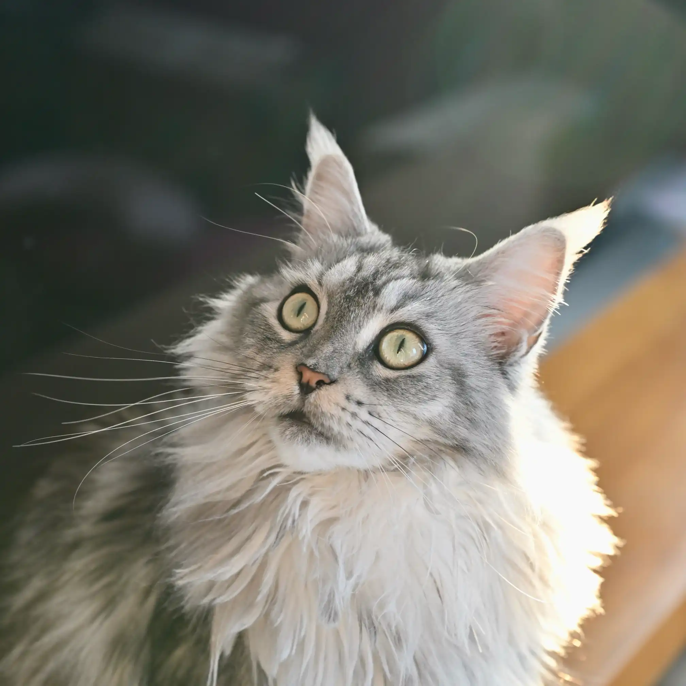
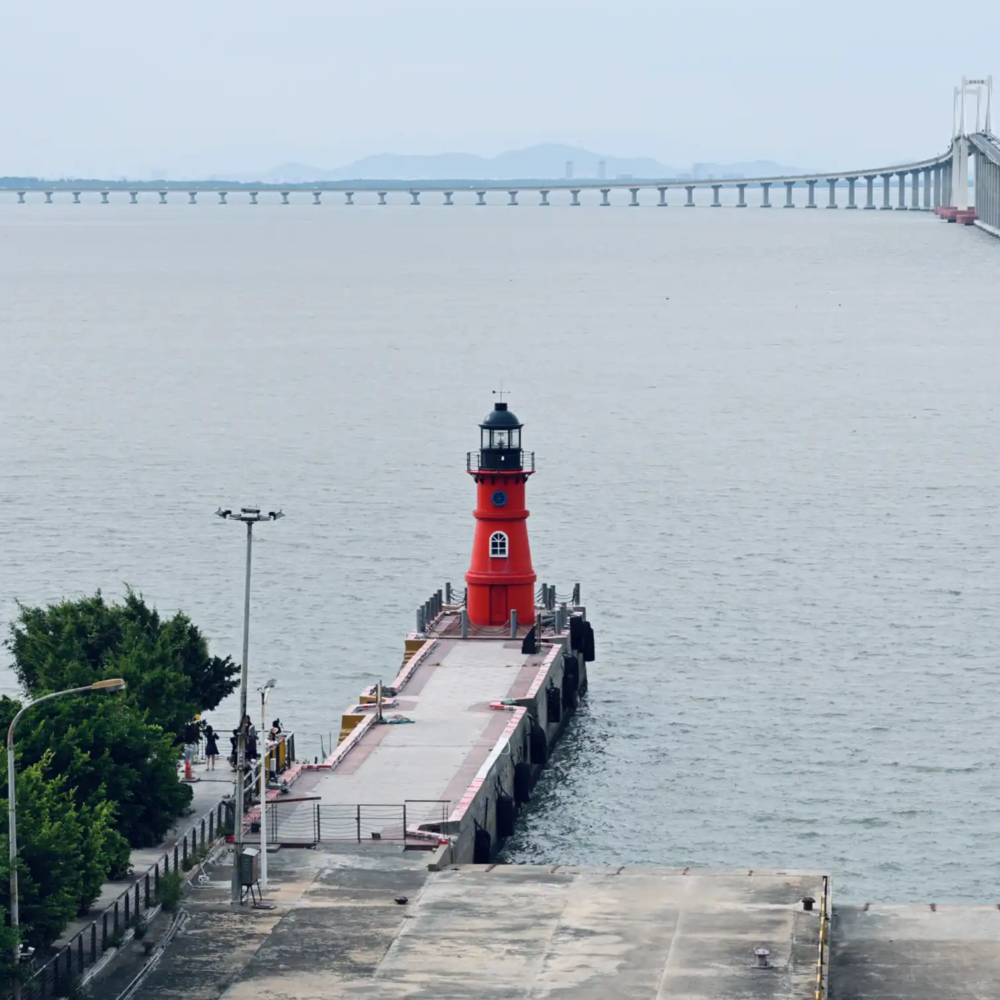
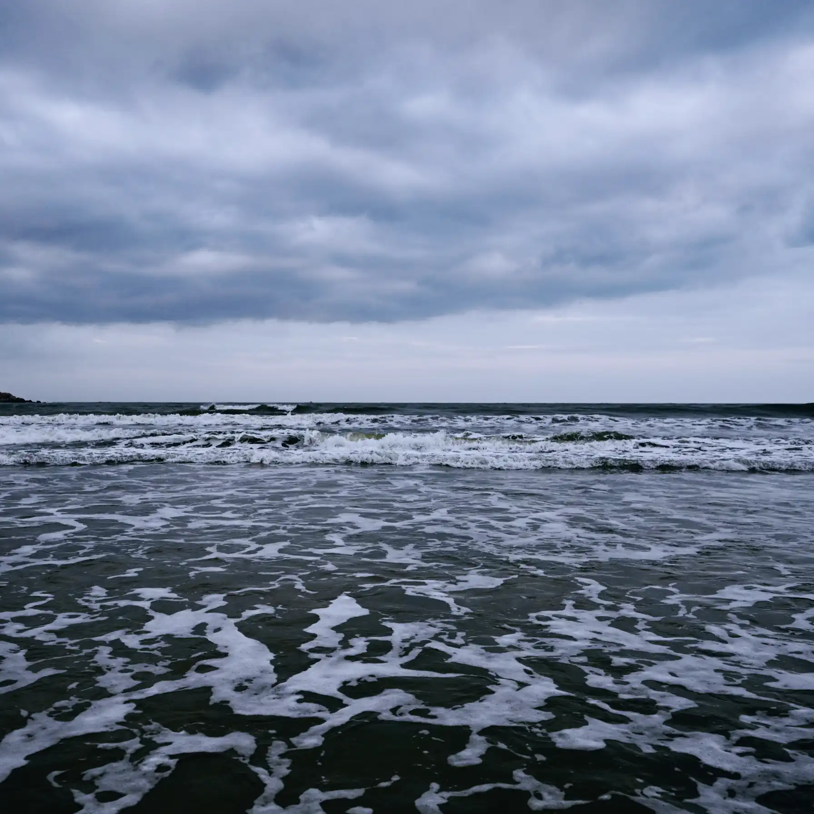
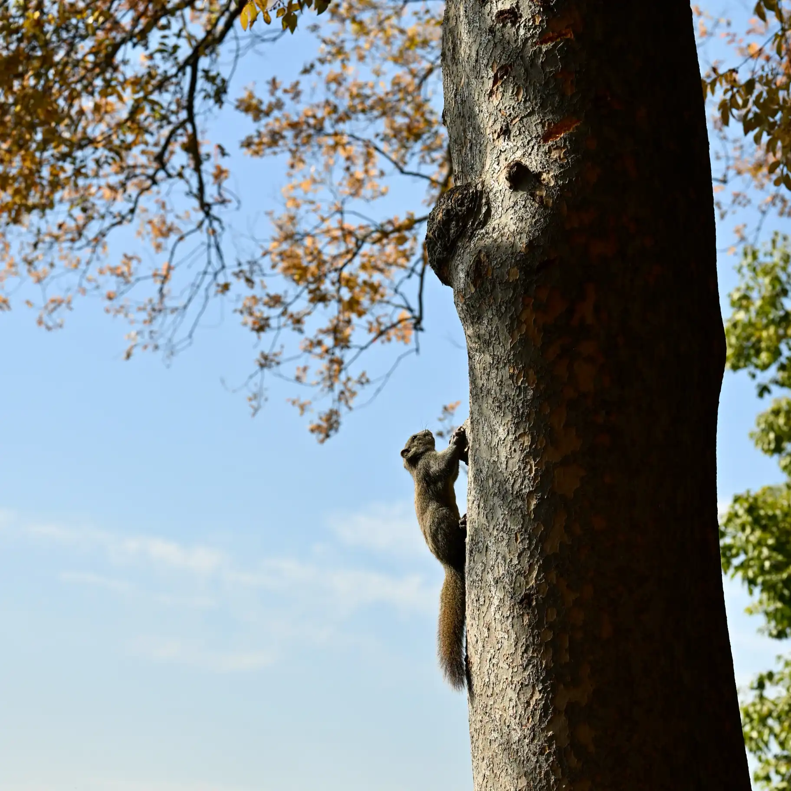
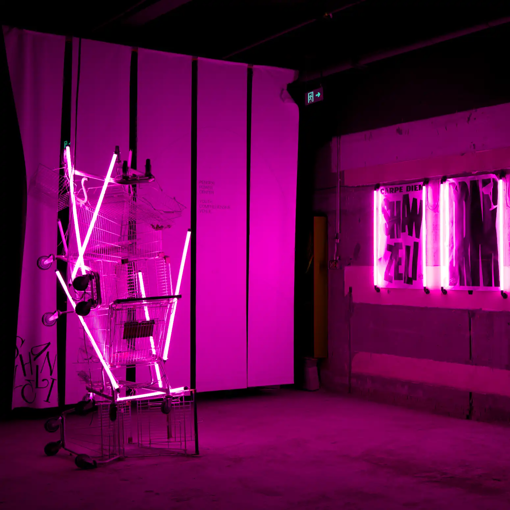

关于我About me
从业五年的游戏开发工程师，先后在字节跳动、乐狗和网易等公司参与多款游戏研发，目前专注于技能、怪物 AI、寻路等核心战斗 Gameplay 开发，曾参与过客户端系统 UI 和引擎工具开发。 A game developer with five years of experience, I've worked on multiple titles at ByteDance, Legou and NetEase. I currently focus on core combat gameplay — skills, monster AI and pathfinding — and have also worked on client system UI and engine tooling.
工作之外的爱好是游戏、音乐和摄影，喜欢玩各种单机游戏和主机游戏，比较常听 J-POP，并且是一位尼康佬。 Outside of work, I enjoy games, music and photography — I love single-player and console games, listen to a lot of J-POP, and I'm a Nikon guy.
工作履历Experience
高级游戏客户端开发工程师Senior Game Client Developer
网易 · Joker 事业部 · 遗忘之海NetEase · Joker Studio · Sea of Remnants
负责海战Gameplay开发，怪物AI、寻路、技能、Buff等战斗系统开发与性能优化。 Owned naval-combat gameplay, developing combat systems — monster AI, pathfinding, skills and buffs — as well as performance optimization.
高级游戏客户端开发工程师Senior Game Client Developer
网易 · 天下事业部 · 猫和老鼠手游NetEase · Tianxia Studio · Tom and Jerry: Chase
负责客户端系统UI开发，参与了新手活动、春节活动、填色游戏、剧情叙事等客户端系统功能开发。 Developed client system UI, working on new-player events, Spring Festival events, a coloring mini-game, narrative storytelling and other client features.
游戏客户端开发工程师Game Client Developer
乐狗游戏 · 万国觉醒Legou Games · Rise of Kingdoms
负责客户端系统UI开发，参与了圣诞节活动、宝石寻访等客户端系统功能开发。 Developed client system UI, working on the Christmas event, Gem Hunt and other client features.
游戏客户端开发工程师Game Client Developer
字节跳动 · 朝夕光年 · 绿洲ByteDance · Nuverse · Oasis
MiniGame项目中负责同步与战斗系统开发。正式项目中参与了任务UI等客户端系统开发、资源检查工具引擎插件开发、UGC小游戏客户端与编辑器开发。 On the MiniGame project, built the sync and combat systems. On the main project, worked on client systems such as quest UI, a resource-checking engine plugin, and the UGC mini-game client and editor.
计算机科学与技术 · 本科B.S. in Computer Science
北京理工大学Beijing Institute of Technology
曾担任计算机学院本科生数字艺术实验室主任，组织了各种游戏相关活动与游戏开发培训，参与了多次国家数字仿真项目。在校期间还参加过多次校内外举办的ACM和游戏开发比赛，包括Global Game Jam 2019等。 Served as head of the undergraduate digital-art lab, organizing various game-related activities and game-dev training, and took part in several national digital simulation projects. Also competed in several ACM and game-dev contests, including Global Game Jam 2019, among others.





联系我Get in touch
无论是工作机会、合作，还是只想打个招呼，都欢迎给我发邮件。 Whether it's a job opportunity, a collaboration, or just a hello — feel free to email me.